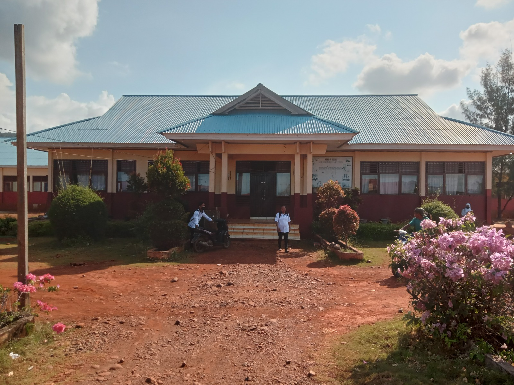
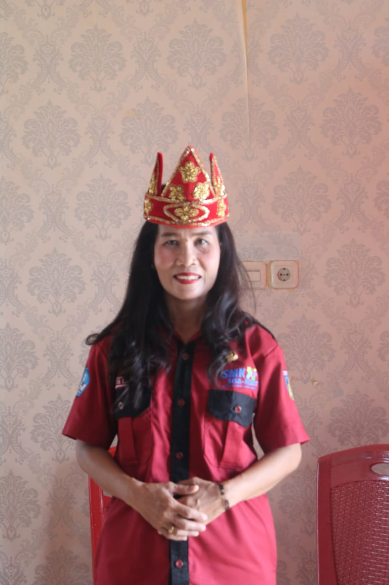

Sekolah Menengah Kejuruan atau (SMK) adalah sekolah formal yang menyelengarakkan pendidikan kejuruan pada jenjang pendidikan menengah setara dengan SMA/MA.
Sekolah Menengah Kejuruan adalah pendidikan formal yang menyelenggarakan pendidikan kejuruan pada jenjang pendidikan menegah, sebagai lanjutan dari SMP,MTs,atau bentuk lainya yang sederajat.Tujuan pendidikan di SMK adalah membentuk setiap lulusan agar siap memasuki duni kerja,dipekerjakan, atau sebagai wiraswasta.Untuk memenuhi tujuan tersebut diperlukan percepatan dan peningkatan kompetensi siswa.
Pada model ini pembeljaran dilaksanakan sepenuhnya di sekolah.model ini berasumsi bahwa segala hal yang terjadi di sekolah dan semua sumber belajar ada di sekolah.Model ini banyak di adopsi di indonesia sebelum Repelita VI.
Menunjukkan kemantapan kecerdasan spritual (SQ) dalam hubungannta dengan iman,taqwa dan moral dalam kehidupan bermasyarakat yang dinamis,terbuka dan modern!
Terbentuknya Lulusan yang berahklak mulia,kreatif,mulia,sehat,mandiri dan peduli lingkungan!
Meningkatkan peran sekolah kejuruan sebagai pusat pengembangan keahlian,budaya hidup sehat.!
Kepala sekolah
SMK NEGERI 1 PETASIA TIMUR
